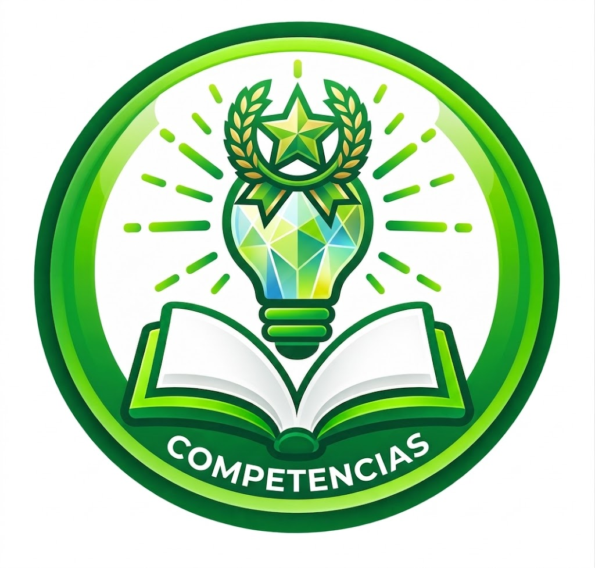
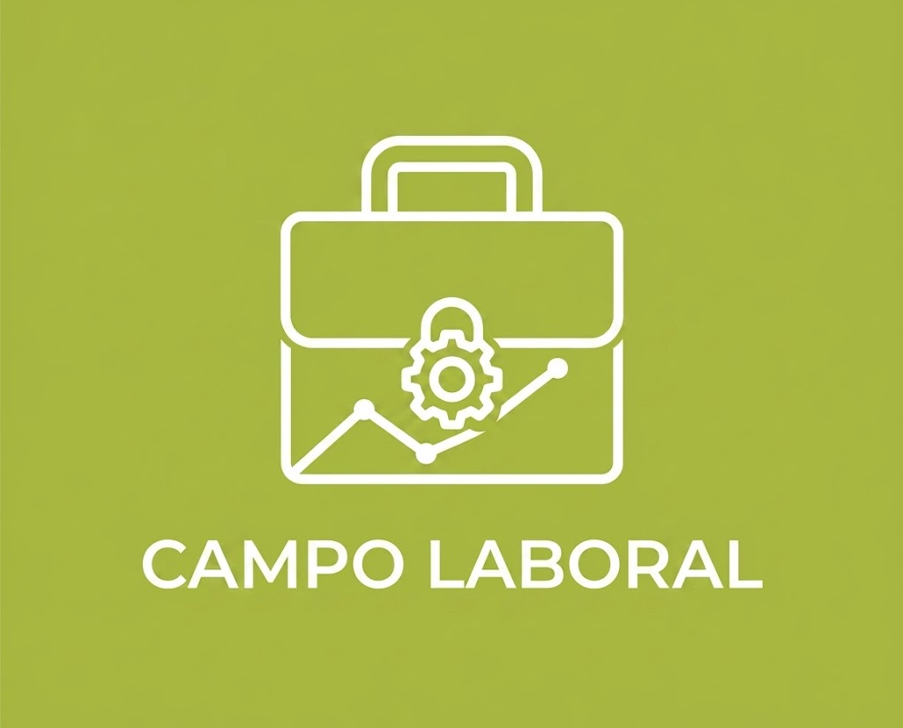
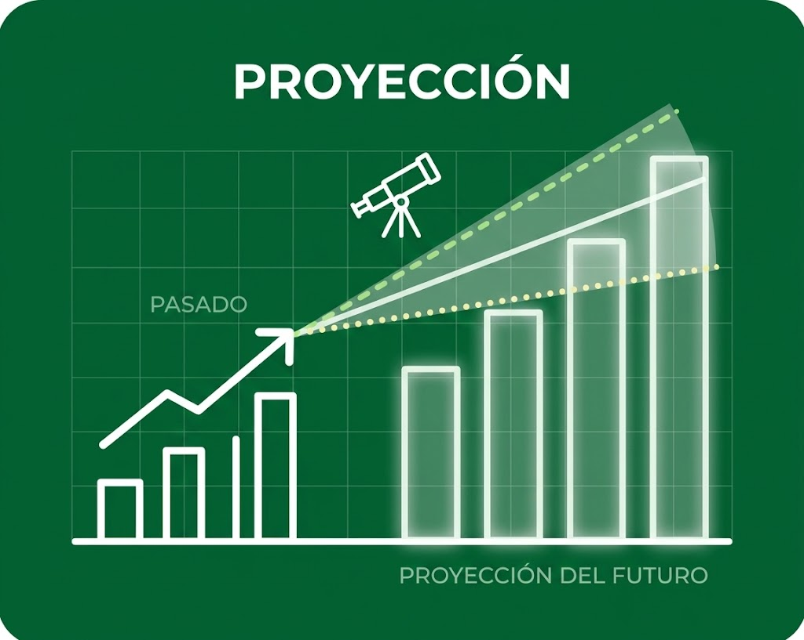

Animación Turística
Animación Turística
¿Qué es?
Técnica orientada al desarrollo de actividades relacionadas con el turismo, la recreación y la promoción de experiencias para los visitantes.
Perfil del estudiante
Estudiante creativo, comunicativo, dinámico, interesado en el turismo, la recreación y la organización de actividades.

Competencias
- Marketing turístico.
- Producción de contenidos audiovisuales.
- Organización de actividades recreativas.
- Promoción de destinos y experiencias turísticas.

Campo laboral
Puede proyectarse en áreas relacionadas con turismo, recreación, promoción turística, eventos y creación de contenido.

Proyección
La técnica permite desarrollar proyectos relacionados con marketing, audiovisuales y diferentes actividades de turismo y recreación.